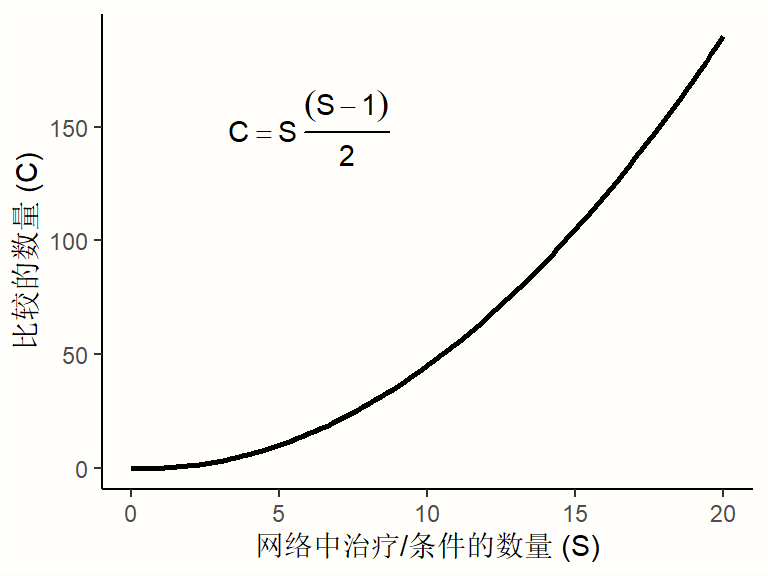

网络Meta分析

当 我们对临床试验或其他类型的干预研究进行meta分析时，我们通常估计一种特定治疗的真实效应量。我们纳入那些将相同类型的干预措施与相似对照组（例如安慰剂）进行比较的研究。在其他条件相同的情况下，这可以评估特定类型的治疗是否有效。
然而，在许多研究领域，不仅仅存在一种“决定性”的治疗方法，而是存在多种。例如，偏头痛可以用各种药物治疗，也存在非药物治疗的选择。尤其是在“成熟”的研究领域中，证明某种治疗有益往往不太重要。相反，我们想要找出哪种治疗对某些特定适应症最有效。
这导致了新的问题。为了在传统的meta分析中评估几种治疗方法的比较效果，需要在两种治疗方法之间进行足够的头对头比较。唉，情况往往并非如此。在许多研究领域，通常发现只有少数（如果存在）试验直接比较了两种治疗方法的效果，而不是“较弱”的对照组。这通常意味着传统的meta分析不能用于建立关于几种治疗方法的相对有效性的可靠证据。
然而，虽然两种或多种治疗方法之间的直接比较可能不存在，但通常可以获得间接证据。不同的治疗方法可能已经在单独的试验中进行了评估，但所有这些试验可能都使用了相同的对照组。例如，两种药物可能从未直接比较过，但与安慰剂相比，这两种药物的效果可能都经过了广泛的研究。
网络meta分析可用于纳入这种间接比较，因此使我们能够同时比较几种干预措施的效果[@dias2013evidence]。网络meta分析也称为混合治疗比较meta分析[@van2012automating]。这是因为它将多个直接和间接的治疗比较整合到一个模型中，该模型可以形式化为一个比较的“网络”。
网络meta分析是一个“热门”的研究课题。在过去的十年中，它越来越受到生物医学领域和其他学科的应用研究人员的青睐。然而，这种方法也带来额外的挑战和陷阱，特别是在异质性和所谓的网络不一致性方面[@salanti2014evaluating]。
因此，重要的是首先讨论网络meta分析模型的核心组成部分和假设。网络meta分析的基础有时可能有点抽象。因此，我们将逐步介绍必要的细节，以便更好地理解这种方法。
什么是网络Meta分析？
直接与间接证据
首先，我们必须理解“治疗网络”是什么意思。假设我们已经从一些随机对照试验 \(i\) 中提取了数据，该试验比较了治疗方法A与另一种条件B（例如，等候名单对照组）的效果。我们可以用图形来说明这种比较：
这种治疗比较的可视化表示称为图。图是用于模拟不同对象之间如何相互关联的结构，并且存在一个完整的数学子领域，图论，专门研究这个主题。
我们的图有两个核心组成部分。第一个是两个圆圈（所谓的节点），它们代表试验 \(i\) 中的两种条件A和B。第二个组成部分是连接这两个节点的线。这条线被称为边。边表示A和B如何相互关联。在我们的例子中，这条线的解释非常简单。我们可以根据我们在比较A和B时观察到的效应量 \(\hat\theta_{i\text{,A,B}}\) 来描述A和B之间的关系。这种效应量可以表示为，例如，SMD或优势比，具体取决于结果测量。
现在，假设我们还从另一项研究 \(j\) 中获得了数据。该试验也使用了对照条件B。但该研究没有施用A，而是使用了另一种治疗方法C。在研究 \(j\) 中，治疗方法C也与B进行了比较。我们可以将此信息添加到我们的图中：
这创建了我们的第一个小型网络。可以清楚地看到，该图现在包含两个效应量估计值：\(\hat\theta_{i\text{,A,B}}\)，比较A和B，以及 \(\hat\theta_{j\text{,C,B}}\)，比较C和B。由于这两个效应量都是在“真实”试验中直接观察到的，因此我们将此类信息称为直接证据。因此，我们用 \(\hat\theta^{\text{direct}}_{\text{B,A}}\) 和 \(\hat\theta^{\text{direct}}_{\text{B,C}}\) 表示这些效应量。在这种表示法中，条件B排在第一位，因为我们确定它是我们的参考组。我们选择B作为参考条件，因为两项试验都使用它作为对照组。
在新图中，所有节点（条件）要么直接连接，要么间接连接。B条件（我们的对照组）直接连接到所有其他节点。在图中只需要一个“步骤”就可以从B到达其他两个节点A和C：B \(\rightarrow\) A，B \(\rightarrow\) C。相反，A和C只有一个直接连接，它们都连接到B：A \(\rightarrow\) B 和 C \(\rightarrow\) B。
但是，A和C之间存在间接连接。这种连接的存在是因为B充当了两种条件之间的链接或桥梁：A \(\rightarrow\) B \(\rightarrow\) C。因此，存在间接证据 表明A和C之间的关系，可以从网络的结构中得出：
使用来自直接观察到的边的信息，我们可以计算间接观察到的A和C之间比较的效果。我们用 \(\hat\theta^{\text{indirect}}_{\text{A,C}}\) 表示这种未观察到的间接效应量。可以使用以下公式推导效应估计值[@dias2018network, chapter 1]：
\[\begin{equation} \hat\theta_{\text{A,C}}^{\text{indirect}} = \hat\theta_{\text{B,A}}^{\text{direct}} - \hat\theta_{\text{B,C}}^{\text{direct}} (\#eq:networkes) \end{equation}\]
这一步是网络meta分析的关键组成部分。上面的公式让我们能够估计比较的效应量，即使它从未在试验中直接评估过。
网络meta分析涉及在一个模型中组合直接和间接证据。基于此信息，我们可以估计每个纳入治疗的（相对）效果。通过添加间接证据，我们还可以提高效应量估计的精度，即使存在该特定比较的直接证据。总的来说，网络meta分析具有以下几个优点：
它允许我们将一组相关研究中的所有可用信息汇集到一个分析中。想想我们通常如何在传统的meta分析中处理将不同治疗方法与安慰剂进行比较的试验。我们将不得不在单独的meta分析中汇集每次比较（例如，治疗A与安慰剂比较，治疗B与安慰剂比较，治疗A与治疗B比较等）。
网络meta分析可以将间接证据纳入网络中，这在传统的meta分析中是不可能的。在成对meta分析中，我们只能汇集试验中实际包含的比较的直接证据。
如果满足所有假设，并且结果具有足够的结论性，则网络meta分析允许我们推断出哪种类型的治疗可能更适合所研究的目标人群。
所有这些听起来都很有趣，但我们必须考虑一些重要的限制。首先，看看间接效应量估计值的方差是如何计算的：
\[\begin{equation} \text{Var} \left(\hat\theta_{\text{A,C}}^{\text{indirect}} \right) = \text{Var} \left(\hat\theta_{\text{B,A}}^{\text{direct}} \right) + \text{Var} \left(\hat\theta_{\text{B,C}}^{\text{direct}} \right) (\#eq:nw2) \end{equation}\]
为了计算间接比较的方差，我们将直接比较的方差相加。这意味着与基于直接证据的效应量相比，从间接证据估计的效应量将始终具有更大的方差，因此精度较低[@dias2018network, chapter 1]。这完全符合逻辑。与必须通过数学推断的结果相比，我们对从观察数据估计的效应量具有更高的置信度。
还有另一个问题。之前的公式@ref(eq:networkes)允许我们从直接比较中估计间接证据，但前提是满足一个关键的先决条件：传递性假设。从统计学角度来看，这个假设转化为网络一致性[@efthimiou2016getreal]。下面，我们将解释这两个术语的含义，以及为什么它们很重要。
传递性与一致性
网络meta分析无疑是标准meta分析方法的有价值的扩展。然而，它们的有效性并没有保持不变。对网络meta分析的大部分批评都围绕着使用间接证据，正如您可能已经猜到的那样[@edwards2009indirect; @ioannidis2006indirect]。这尤其涉及实际存在比较的直接证据的情况。
关键问题是，虽然（随机）试验中的参与者是偶然地分配到一种治疗条件（例如，A和B）的，但试验条件本身并不是在我们的网络中随机选择的。这当然是完全符合逻辑的。将参与者随机分配到试验的几种条件之一通常没有问题。然而，很难想象研究人员在推出她的研究之前，会通过掷骰子来确定试验中使用的治疗条件。在网络meta分析中，选定的试验条件的组成几乎不会遵循随机模式。
这对网络meta分析模型本身来说并不构成问题[@dias2018network, chapter 1]。只有当试验中特定比较的选择或不选择取决于该比较的真实效果时，我们的网络meta分析模型才会产生偏差[@dias2013evidence]。这个说法非常抽象，所以让我们详细说明一下。
我们刚才提到的要求源自网络meta分析的传递性假设。关于这是否是网络meta分析独有的假设，或者只是传统成对meta分析中假设的扩展，文献中存在分歧。这种分歧可能部分是由于文献中术语使用不一致造成的[@dias2018network; @efthimiou2016getreal; @song2009methodological; @lu2009modeling]。
传递性假设的核心原则是，我们可以组合直接证据（例如，来自A \(−\) B和C \(−\) B的比较）来创建关于相关比较的间接证据（例如，A \(−\) C），就像我们之前使用公式@ref(eq:networkes)所做的那样[@efthimiou2016getreal]。
传递性假设与可交换性的概念有关。我们已经在第@ref(rem)章中描述了这个前提条件，我们在该章中讨论了随机效应模型。可交换性假设表明，某些比较 \(i\) 的每个真实效应量 \(\theta_i\) 都是从真实效应量的“总体”分布中随机、独立抽取的结果。
为了将这个假设转化为我们的场景，可以将网络meta分析视为一组 \(K\) 试验。现在，我们假设模型中的每个试验都包含网络中所有可能的治疗比较，用 \(M\) 表示（例如，A \(−\) B，A \(−\) C，B \(−\) C 等等）。但是，一些治疗比较已经被“删除”，因此在某些试验中“缺失”。原因是，在实践中，研究无法评估所有可能的治疗选择[@dias2013evidence]。
关键假设是，例如 A \(-\) B 的比较效果在试验之间是可交换的——无论试验是否实际评估了这种比较，或者它是否“缺失”。在网络meta分析中，当某些比较 \(i\) 的效应 \(\hat\theta_i\) 基于从真实效应的总体分布中随机、独立抽取的结果时，无论该效应量是通过直接证据还是间接证据得出，都满足可交换性。
当协变量或其他效应修饰因素（例如，研究人群的年龄组或治疗强度）在评估条件 A 与 B 和 C 与 B 的试验中没有均匀分布时，可能会违反传递性假设[@song2009methodological]。传递性本身无法通过统计学方法进行检验，但可以通过仅纳入人口、方法和目标条件尽可能相似的研究来减轻违反该假设的风险[@salanti2014evaluating]。
传递性的统计表现形式称为一致性，而缺乏一致性则称为不一致[@efthimiou2016getreal; @cipriani2013conceptual]。一致性意味着基于直接证据的比较（例如，A \(-\) B）的相对效果与基于间接证据的效果没有差异[@schwarzer2015meta, chapter 8]：
\[\begin{equation} \theta_{\text{A,B}}^{\text{indirect}} = \theta_{\text{A,B}}^{\text{direct}} (\#eq:nw3) \end{equation}\]
已经提出了几种方法来诊断网络meta分析模型中的不一致性，包括网络热图[@krahn2013graphical]和节点分割方法[@dias2010checking]。我们将在以下章节中更详细地描述这些方法。
网络Meta分析模型
这结束了我们对网络meta分析模型基本理论和假设的描述。之前，我们使用了一个包含三个节点和边的简单网络作为说明。然而，在实践中，网络meta分析中包含的治疗方法数量通常要高得多。这很快导致了相当复杂的网络，例如看起来像这样的网络：
然而，随着网络中治疗方法 \(S\) 数量的增加，我们需要估计的（直接和间接）成对比较 \(C\) 的数量会急剧增加：

因此，我们需要一个计算模型，该模型允许我们以有效且内部一致的方式汇集所有可用的网络数据。已经开发了几种用于网络meta分析的统计方法[@efthimiou2016getreal]。在接下来的章节中，我们将讨论频率学以及贝叶斯分层模型，以及如何在 R 中实现它们。
我应该使用哪种建模方法？
虽然网络meta分析模型在统计方法上可能有所不同，但好消息是，当样本量足够大时，所有模型都应该产生相同的结果[@shim2019network]。一般来说，没有哪种网络meta分析方法比其他方法更有效或更无效。因此，您可以根据您认为更直观的方法，或者基于实现它的 R 包的功能，安全地选择一种方法[@efthimiou2016getreal]。
在大多数学科中，基于频率论推断的方法（仍然）比贝叶斯方法更常见。这意味着有些人可能更容易理解频率论模型产生的结果类型。一个缺点是，在 R 中实现频率论网络meta分析（我们将在接下来介绍）还不支持meta回归，而使用贝叶斯模型是可能的。
在实践中，一个有用的策略是选择一种方法进行主要分析，然后在敏感性分析中使用另一种方法。如果这两种方法得出相同的结论，这将增加我们对研究结果值得信赖的信心。
频率学网络Meta分析
下面，我们将介绍如何使用 {netmeta} 包 [@nemeta] 执行网络meta分析。该包允许在频率学框架内估计网络meta分析模型。{netmeta} 使用的方法源自图论技术，该技术最初是为电气网络开发的[@rucker2012network]。
概率的频率学解释
频率论是解释某些事件 (E) 的概率的一种常见的理论方法。频率论方法根据如果我们重复某个过程（例如，实验）很多很多次，预期 (E) 发生的频率来定义 (E) 的概率[@aronow2019foundations, chapter 1.1.1]。
频率论的思想是定量研究人员每天使用的许多统计程序的核心，例如显着性检验、置信区间的计算或 (p) 值。
图论模型
现在让我们描述一下 {netmeta} 包中实现的网络meta分析模型是如何制定的。假设我们已经从几个试验中收集了效应量数据。然后，我们遍历所有 \(K\) 个试验，并计算研究中包含的治疗比较的总数。成对比较的数量用 \(M\) 表示。
然后，我们计算每个比较 \(m\) 的效应量 \(\hat\theta_m\)，并将所有效应量收集到一个向量中 \(\boldsymbol{\hat\theta} = (\hat\theta_1, \hat\theta_2, \dots, \hat\theta_M)\)。为了运行网络meta分析，我们现在需要一个模型来描述如何生成观察到的效应量向量 \(\boldsymbol{\hat\theta}\)。在 {netmeta} 中，使用以下模型 [@schwarzer2015meta, chapter 8]：
\[\begin{equation} \boldsymbol{\hat\theta} =\boldsymbol{X} \boldsymbol{\theta}_{\text{treat}} + \boldsymbol{\epsilon} (\#eq:nw4) \end{equation}\]
我们假设观察到的效应量向量 \(\boldsymbol{\hat\theta}\) 是由公式的右侧（我们的模型）生成的。第一部分，\(\boldsymbol{X}\) 是一个 \(m \times n\) 设计矩阵，其中列表示不同的治疗方法 \(n\)，行表示治疗比较 \(m\)。在矩阵中，治疗比较由同一行中的 1 和 -1 定义，其中列位置与正在比较的治疗方法相对应。
公式中最重要的部分是向量 \(\boldsymbol{\theta}_{\text{treat}}\)。该向量包含我们网络中 \(n\) 种独特治疗方法的真实效果。这个向量是我们的网络meta分析模型需要估计的，因为它允许我们确定网络中哪些治疗方法是最有效的。
参数 \(\boldsymbol{\epsilon}\) 是一个包含所有比较的抽样误差 \(\epsilon_m\) 的向量。假定每个比较的抽样误差是从均值为零且方差为 \(\sigma^2_m\) 的高斯正态分布中随机抽取的：
\[\begin{equation} \epsilon_m \sim \mathcal{N}(0,\sigma_m^2) (\#eq:nw4) \end{equation}\]
为了说明模型公式 [参见 @schwarzer2015meta, page 189]，假设我们的网络meta分析由 \(K=\) 5 项研究组成。每项研究都包含独特的治疗比较（即 \(K=M\)）。这些比较是 A \(-\) B、A \(-\) C、A \(-\) D、B \(-\) C 和 B \(-\) D。这导致了一个（观察到的）比较向量 \(\boldsymbol{\hat\theta} = (\hat\theta_{1\text{,A,B}}, \hat\theta_{2\text{,A,C}}, \hat\theta_{4\text{,A,D}}, \hat\theta_{4\text{,B,C}}, \hat\theta_{5\text{,B,D}})^\top\)。我们的目标是估计网络中包含的所有四个条件的真实效应量，\(\boldsymbol{\theta}_{\text{treat}} = (\theta_{\text{A}}, \theta_{\text{B}}, \theta_{\text{C}}, \theta_{\text{D}})^\top\)。如果我们把这些参数插入到我们的模型公式中，我们会得到下面的等式：
\[\begin{align} \boldsymbol{\hat\theta} &= \boldsymbol{X} \boldsymbol{\theta}_{\text{treat}} + \boldsymbol{\epsilon} \notag \\ \begin{bmatrix} \hat\theta_{1\text{,A,B}} \\ \hat\theta_{2\text{,A,C}} \\ \hat\theta_{3\text{,A,D}} \\ \hat\theta_{4\text{,B,C}} \\ \hat\theta_{5\text{,B,D}} \\ \end{bmatrix} &= \begin{bmatrix} 1 & -1 & 0 & 0 \\ 1 & 0 & -1 & 0 \\ 1 & 0 & 0 & -1 \\ 0 & 1 & -1 & 0 \\ 0 & 1 & 0 & -1 \\ \end{bmatrix} \begin{bmatrix} \theta_{\text{A}} \\ \theta_{\text{B}} \\ \theta_{\text{C}} \\ \theta_{\text{D}} \\ \end{bmatrix} + \begin{bmatrix} \epsilon_{1} \\ \epsilon_{2} \\ \epsilon_{3} \\ \epsilon_{4} \\ \epsilon_{5} \\ \end{bmatrix} (\#eq:nw5) \end{align}\]
值得注意的是，就目前的形式而言，这个模型公式从数学角度来看是有问题的。现在，该模型是过度参数化的。模型中有太多的参数 \(\boldsymbol{\theta}_{\text{treat}}\) 需要根据手头的信息进行估计。
这与设计矩阵 \(\boldsymbol{X}\) 没有满秩有关。在我们的例子中，当矩阵的列不是全部独立的时，矩阵就没有满秩；或者，换句话说，当独立列的数量小于列的总数 \(n\) 时1。因为我们正在处理一个治疗方法的网络，所以很明显，治疗方法的组合不会完全彼此独立。例如，治疗方法 D 的列（第四列）可以描述为前三列的线性组合2。
总的来说，最多有 \(n-1\) 个独立的治疗方法比较，但我们的模型总是需要估计 \(\boldsymbol{\theta}_{\text{treat}}\) 中 \(n\) 种治疗方法的真实效果。因此，该矩阵没有满秩。\(\boldsymbol{X}\) 没有满秩的事实意味着它是不可逆的；因此，无法使用（加权）最小二乘法直接估计 \(\boldsymbol{\theta}_{\text{treat}}\)。
这就是 {netmeta} 中实现的图论方法提供解决方案的地方。我们将为您省去这种方法背后繁琐的数学细节，特别是考虑到 {netmeta} 包无论如何都会为我们完成繁重的工作。我们只提一下，这种方法涉及构建一个所谓的Moore-Penrose 伪逆矩阵，然后可以使用加权最小二乘法计算我们网络模型的拟合值。
该程序还处理多臂研究，这些研究贡献了多个成对比较（即，比较了两种以上条件的研究）。多臂比较是相关的，因为至少有一个条件被比较多次（第 @ref(unit-of-analysis) 章）。这意味着多臂研究比较的精度被人为地提高了——除非在我们的模型中考虑了这一点。
该模型还允许我们将研究间异质性的估计值纳入其中。与“传统的”随机效应模型（第 @ref(rem) 章）一样，这是通过将估计的异质性方差 \(\hat\tau^2\) 添加到比较 \(m\) 的方差来实现的：\(s^2_m + \hat\tau^2\)。在 {netmeta} 包中，\(\tau^2\) 值是使用 DerSimonian-Laird 估计器的改编版本估计的 [@jackson2013matrix, 另请参见第 \@ref(tau-estimators) 章]。
也可以计算 \(I^2\) 的等效值，它现在表示我们网络中的不一致性量。与 Higgins 和 Thompson 的公式（参见第 @ref(i-squared) 章）一样，此 \(I^2\) 版本源自 \(Q\)。然而，在网络meta分析中，\(Q\) 转化为网络中的总异质性（也用 \(Q_{\text{total}}\) 表示）。因此，使用以下公式：
\[\begin{equation} I^2 = \text{max} \left(\frac{Q_{\text{total}}-\text{d.f.}} {Q_{\text{total}}}, 0 \right) (\#eq:nw6) \end{equation}\]
其中我们网络中的自由度是：
\[\begin{equation} \text{d.f.} = \left( \sum^K_{k=1}p_k-1 \right)- (n-1) (\#eq:nw7) \end{equation}\]
其中 \(K\) 是研究的总数，\(p\) 是某些研究 \(k\) 中条件的数量，\(n\) 是我们网络模型中治疗方法的总数。
R 中的频率学网络Meta分析
在所有的输入之后，是时候进行一个实践的例子了。下面，我们将使用 {netmeta} 来进行我们自己的网络meta分析。与往常一样，我们首先安装包，然后从库中加载它。
library(netmeta)数据准备
在这个说明中，我们使用 TherapyFormats 数据。这个数据集是根据一个真实的